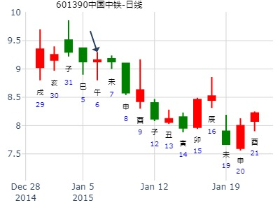
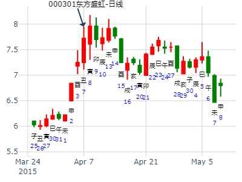
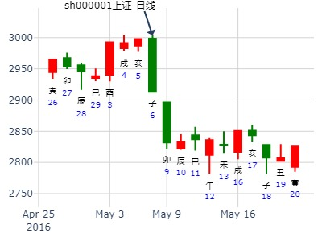
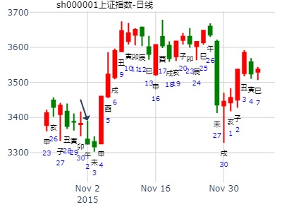
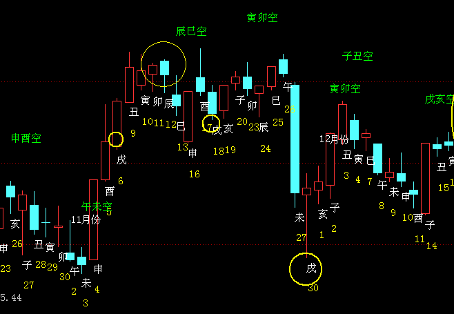

萃之否，大跌。父化进，未化戌，大跌。
预测13日沪指趋势，
公历起卦时间：2010年1月12日 (按
干支：己丑年 丁丑月 壬戌日 辛亥时 （日空：子丑）
神煞：驿马－申 桃花－卯 日禄－亥 贵人－卯，巳
兑宫：泽地萃 乾宫：天地否 (六合)
六神 伏神 本 卦 变 卦
白虎 父母丁未土 ▅▅ ▅▅ ╳→ 父母壬戌土 ▅▅▅▅▅ 应
腾蛇 兄弟丁酉金 ▅▅▅▅▅ 应 兄弟壬申金 ▅▅▅▅▅
勾陈 子孙丁亥水 ▅▅▅▅▅ 官鬼壬午火 ▅▅▅▅▅
朱雀 妻财乙卯木 ▅▅ ▅▅ 妻财乙卯木 ▅▅ ▅▅ 世
青龙 官鬼乙巳火 ▅▅ ▅▅ 世 官鬼乙巳火 ▅▅ ▅▅
玄武 父母乙未土 ▅▅ ▅▅ 父母乙未土 ▅▅ ▅▅
起卦日又值进神戌。次日亥虽然是财爻长生，照样大跌。
白虎父化进，大跌，低开大跌。父化进，正好出大利空。12号晚政府宣布要提高准备金。
13日低开大跌。
20日午日更是长阴大跌。（应在动而逢合的应期）（此处午不做合绊父母爻了，而做动而逢合的应期）
主帖标题: 601390中铁明天涨跌！
出生：没填 年 性别：男 占事：601390中国中铁明天涨跌！
排卦：元亨利贞网六爻在线排盘系统 http://www.china95.net
公历起卦时间：2015年1月6日15时13分 (电脑自动)
干支：甲午年 丁丑月 壬午日 戊申时 （日空：申酉）
兑宫：泽地萃 乾宫：天地否 (六合)
六神 伏神 本 卦 变 卦
白虎 父母丁未土 ▅▅ ▅▅ ╳→ 父母壬戌土 ▅▅▅▅▅ 应
腾蛇 兄弟丁酉金 ▅▅▅▅▅ 应 兄弟壬申金 ▅▅▅▅▅
勾陈 子孙丁亥水 ▅▅▅▅▅ 官鬼壬午火 ▅▅▅▅▅
朱雀 妻财乙卯木 ▅▅ ▅▅ 妻财乙卯木 ▅▅ ▅▅ 世
青龙 官鬼乙巳火 ▅▅ ▅▅ 世 官鬼乙巳火 ▅▅ ▅▅
玄武 父母乙未土 ▅▅ ▅▅ 父母乙未土 ▅▅ ▅▅

风生水起 占事：大盘未来十二年
起卦方式：手动摇卦
公历时间：2016年1月31日10时53分
干 支：乙未年 己丑月 壬子日 乙巳时
旬 空：辰巳 午未 寅卯 寅卯
兑宫：泽地萃 乾宫：天地否（六合）
六神 【本 卦】 【变 卦】
白虎 ▄▄ ▄▄ 父母丁未土 × ▄▄▄▄▄ 父母壬戌土 应
螣蛇 ▄▄▄▄▄ 兄弟丁酉金 应 ▄▄▄▄▄ 兄弟壬申金
勾陈 ▄▄▄▄▄ 子孙丁亥水 ▄▄▄▄▄ 官鬼壬午火
朱雀 ▄▄ ▄▄ 妻财乙卯木 ▄▄ ▄▄ 妻财乙卯木 世
青龙 ▄▄ ▄▄ 官鬼乙巳火 世 ▄▄ ▄▄ 官鬼乙巳火
玄武 ▄▄ ▄▄ 父母乙未土 ▄▄ ▄▄ 父母乙未土
富满微1234月。萃之否。-金玉堂
时间: 2023-01-09
干支: 壬寅年癸丑月丁卯日 (旬空: 戌亥 )
泽地萃 天地否
六神 伏神 本 卦 变 卦
青龙 ▅▅ ▅▅ 父母未土 Ｘ→ ▅▅▅▅▅ 父母戌土 应
玄武 ▅▅▅▅▅ 兄弟酉金 应 ▅▅▅▅▅ 兄弟申金
白虎 ▅▅▅▅▅ 子孙亥水 ▅▅▅▅▅ 官鬼午火
腾蛇 ▅▅ ▅▅ 妻财卯木 ▅▅ ▅▅ 妻财卯木 世
勾陈 ▅▅ ▅▅ 官鬼巳火 世 ▅▅ ▅▅ 官鬼巳火
朱雀 ▅▅ ▅▅ 父母未土 ▅▅ ▅▅ 父母未土
财值日，寅卯月还能涨。戌空，辰一冲就实。开跌。
天顺风能到六月底。半年卦。萃之否--金玉堂
时间: 2023-01-28 10时44分
干支: 壬寅年癸丑月丙戌日 (旬空: 午未 )
泽地萃 天地否
六神 伏神 本 卦 变 卦
青龙 ▅▅ ▅▅ 父母未土 Ｘ→ ▅▅▅▅▅ 父母戌土 应
玄武 ▅▅▅▅▅ 兄弟酉金 应 ▅▅▅▅▅ 兄弟申金
白虎 ▅▅▅▅▅ 子孙亥水 ▅▅▅▅▅ 官鬼午火
腾蛇 ▅▅ ▅▅ 妻财卯木 ▅▅ ▅▅ 妻财卯木 世
勾陈 ▅▅ ▅▅ 官鬼巳火 世 ▅▅ ▅▅ 官鬼巳火
朱雀 ▅▅ ▅▅ 父母未土 ▅▅ ▅▅ 父母未土
富满微卦，同在丑月，在卯日，戌空，寅卯月还能涨。
天顺风能，日月都是父母土，未空被流月丑冲实。当月就要见顶。
还连带寅卯月也涨不动。
主帖标题: T-Z-D上证指数擂台赛第七场第4局（2020年2月20日）T方
起卦公历：2020年2月19日15时48分(北京时间)
干支： 庚子年 戊寅月 壬辰日 戊申时 (卦身：卯)已
主变卦 泽地萃(兑宫) 之 天地否(乾宫) [空亡:午、未]
白虎 ━ ━× 父母未土 ━━━ 父母戌土 应
螣蛇 ━━━ 兄弟酉金 应 ━━━ 兄弟申金
勾陈 ━━━ 子孙亥水 ━━━ 官鬼午火
朱雀 ━ ━ 妻财卯木 ━ ━ 妻财卯木 世
青龙 ━ ━ 官鬼巳火 世 ━ ━ 官鬼巳火
玄武 ━ ━ 父母未土 ━ ━ 父母未土
◇上六:赍咨涕咦，无咎。 象曰：齎咨涕洟，未安上也。
午未空，丑日大跌冲实未发作。
辰日将进神冲飞，还能涨涨。 戌日进神值日就跌。酉日兄弟值日就跌。
测上证2023.2.10己亥五-2.17丙午五哪日顶？
求测内容：起卦方式：电脑自动
公历：2023年02月11日09时53分
四柱：癸卯年 甲寅月 庚子日 辛巳时 (日空：辰巳)
卦名：兑宫2世卦：泽地萃 之 乾宫3世六合卦：天地否
螣蛇 ▅ ▅ 父母丁未土 ×→ ▅▅▅ 父母壬戌土 应
勾陈 ▅▅▅ 兄弟丁酉金 应 ▅▅▅ 兄弟壬申金
朱雀 ▅▅▅ 子孙丁亥水 ▅▅▅ 官鬼壬午火
青龙 ▅ ▅ 妻财乙卯木 ▅ ▅ 妻财乙卯木 世
玄武 ▅ ▅ 官鬼乙巳火 世 ▅ ▅ 官鬼乙巳火
白虎 ▅ ▅ 父母乙未土 ▅ ▅ 父母乙未土
主帖标题: [原创]2007年3月23日上海大盘走势预测（最新更新）
摇卦预测3月23日上海大盘
公历时间：2007年3月22日18时0分 星期四
农历时间：丁亥年二月初四酉时
干支：丁亥年 癸卯月 乙卯日 乙酉时 (旬空：子丑)
神煞：驿马—巳 桃花—子 日禄—卯 贵人—子，申
兑宫：泽地萃 乾宫：天地否（六合）
六神 【本 卦】 【变 卦】
玄武 ▅▅ ▅▅ 父母丁未土 ×→ ▅▅▅▅▅ 父母壬戌土 应
白虎 ▅▅▅▅▅ 兄弟丁酉金 应 ▅▅▅▅▅ 兄弟壬申金
螣蛇 ▅▅▅▅▅ 子孙丁亥水 ▅▅▅▅▅ 官鬼壬午火
勾陈 ▅▅ ▅▅ 妻财乙卯木 ▅▅ ▅▅ 妻财乙卯木 世
朱雀 ▅▅ ▅▅ 官鬼乙巳火 世 ▅▅ ▅▅ 官鬼乙巳火
青龙 ▅▅ ▅▅ 父母乙未土 ▅▅ ▅▅ 父母乙未土
既然跟今天的一样；上涨不超过10点；不分析了！

主帖标题: [原创]2007年3月22日上海大盘走势预测/更新/
公历时间：2007年3月22日9时30分 星期四
干支：丁亥年 癸卯月 乙卯日 辛巳时 (旬空：子丑)
神煞：驿马—巳 桃花—子 日禄—卯 贵人—子，申
兑宫：泽地萃 乾宫：天地否（六合）
六神 【本 卦】 【变 卦】
玄武 ▅▅ ▅▅ 父母丁未土 ×→ ▅▅▅▅▅ 父母壬戌土 应
白虎 ▅▅▅▅▅ 兄弟丁酉金 应 ▅▅▅▅▅ 兄弟壬申金
螣蛇 ▅▅▅▅▅ 子孙丁亥水 ▅▅▅▅▅ 官鬼壬午火
勾陈 ▅▅ ▅▅ 妻财乙卯木 ▅▅ ▅▅ 妻财乙卯木 世
朱雀 ▅▅ ▅▅ 官鬼乙巳火 世 ▅▅ ▅▅ 官鬼乙巳火
青龙 ▅▅ ▅▅ 父母乙未土 ▅▅ ▅▅ 父母乙未土
兄弟动破，日月财星有力，但是不利后半段父母动而化进，说明有是非和不好的消息，也暗示了偷偷抛盘兑现；整体走势先涨后跌；收盘小涨。上涨不过10---20点内！需要注意的是后半盘，尤其下午，兑现抛盘的情况会比较多，所以，整体虽然上涨，但是量减少，上涨乏力。
000998隆平高科与上日收盘对比涨跌！开市每天更新！
占事：3月20日甲子日000998隆平高科与上日收盘对比涨跌！
起卦方式：手动摇卦
公历时间：2009年3月19日21时22分 星期四
干支：己丑年 丁卯月 癸亥日 癸亥时 (旬空：子丑)
兑宫：泽地萃 乾宫：天地否（六合）
六神 【本 卦】 【变 卦】
白虎 ▅▅ ▅▅ 父母丁未土 ×→ ▅▅▅▅▅ 父母壬戌土 应
螣蛇 ▅▅▅▅▅ 兄弟丁酉金 应 ▅▅▅▅▅ 兄弟壬申金
勾陈 ▅▅▅▅▅ 子孙丁亥水 ▅▅▅▅▅ 官鬼壬午火
朱雀 ▅▅ ▅▅ 妻财乙卯木 ▅▅ ▅▅ 妻财乙卯木 世
青龙 ▅▅ ▅▅ 官鬼乙巳火 世 ▅▅ ▅▅ 官鬼乙巳火
玄武 ▅▅ ▅▅ 父母乙未土 ▅▅ ▅▅ 父母乙未土
官世克兄应！
小涨！幅度0.7%以下！
萃之否，父化进，，钱币测安福英语培训前景如何？.md
时间：2012年3月8日18点9分 星期四
干支：壬辰年 癸卯月 戊辰日 辛酉时
神煞：华盖-辰 将星-子 劫煞-巳 天医-寅 天禧-戌 桃花-酉 谋星-戌
禄神-己 羊刃-午 文昌-申 马星-寅 灾煞-午 贵人-丑、未
卯月 戊辰日（旬空：戌亥）
六神 藏爻 泽地萃 兑宫 天地否 乾宫
朱雀 ■■ ■■父母未土 ×→ 父母戌土■■■■■■
青龙 ■■■■■■兄弟酉金 应 兄弟申金■■■■■■
玄武 ■■■■■■子孙亥水 官鬼午火■■■■■■
白虎 父母丑土■■ ■■妻财卯木 妻财卯木■■ ■■
腾蛇 妻财卯木■■ ■■官鬼巳火 世 官鬼巳火■■ ■■
勾陈 官鬼巳火■■ ■■父母未土 父母未土■■ ■■

（3月8日）上证指数。
测沪深股市今日走势 起卦方式：手动摇卦
公历时间：2017年3月8日6时38分
干 支：丁酉年 癸卯月 甲午日 丁卯时
旬 空：辰巳 辰巳 (辰巳) 戌亥
兑宫：泽地萃 乾宫：天地否（六合）
六神 【本 卦】 【变 卦】
玄武 ▄▄ ▄▄ 父母丁未土 X ▄▄▄▄▄ 父母壬戌土 应
白虎 ▄▄▄▄▄ 兄弟丁酉金 应 ▄▄▄▄▄ 兄弟壬申金
螣蛇 ▄▄▄▄▄ 子孙丁亥水 ▄▄▄▄▄ 官鬼壬午火
勾陈 ▄▄ ▄▄ 妻财乙卯木 ▄▄ ▄▄ 妻财乙卯木 世
朱雀 ▄▄ ▄▄ 官鬼乙巳火 世 ▄▄ ▄▄ 官鬼乙巳火
青龙 ▄▄ ▄▄ 父母乙未土 ▄▄ ▄▄ 父母乙未土
主帖标题: [原创]2007年4月19日上海大盘走势预测
公历时间：2007年4月19日9时22分 星期四
干支：丁亥年 甲辰月 癸未日 丁巳时 (旬空：申酉)
兑宫：泽地萃 乾宫：天地否（六合）
六神 【本 卦】 【变 卦】
白虎 ▅▅ ▅▅ 父母丁未土 ×→ ▅▅▅▅▅ 父母壬戌土 应
螣蛇 ▅▅▅▅▅ 兄弟丁酉金 应 ▅▅▅▅▅ 兄弟壬申金
勾陈 ▅▅▅▅▅ 子孙丁亥水 ▅▅▅▅▅ 官鬼壬午火
朱雀 ▅▅ ▅▅ 妻财乙卯木 ▅▅ ▅▅ 妻财乙卯木 世
青龙 ▅▅ ▅▅ 官鬼乙巳火 世 ▅▅ ▅▅ 官鬼乙巳火
玄武 ▅▅ ▅▅ 父母乙未土 ▅▅ ▅▅ 父母乙未土
有利空消息出来;开盘低开;上午虽然一度上扬,但是持续不了多久;
全天下跌明显;下跌20点内;
求测人：教授
起卦方式：铜钱摇卦 占问事宜：东方市场持有
起卦公历：2015年4月4日18时49分(北京时间)。
起卦干支： 乙未年 己卯月 庚戌日 乙酉时 (卦身：未)
主变卦 泽地萃(兑宫) 之 天地否(乾宫) [空亡:寅、卯]
螣蛇 ━ ━×父母丁未土 ━━━ 父母壬戌土 应
勾陈 ━━━ 兄弟丁酉金 应 ━━━ 兄弟壬申金
朱雀 ━━━ 子孙丁亥水 ━━━ 官鬼壬午火
青龙 ━ ━ 妻财乙卯木 ━ ━ 妻财乙卯木 世
玄武 ━ ━ 官鬼乙巳火 世 ━ ━ 官鬼乙巳火
白虎 ━ ━ 父母乙未土 ━ ━ 父母乙未土
父化进，很差组合。89日寅卯日却是顶。整体就是一个月以内的顶。
申酉日冲开卯戌合，跌。卯日又涨。卯冲酉兄日破，财爻值日。

主帖标题: 2016丙申年上证指数每天预测实战探索（每天在回复中更新）
公历：2016年4月12日9时30分，星期二。
干支：丙申年 壬辰月 甲子日 己巳时 (卦身：未)
主变卦 泽地萃(兑宫) 之 天地否(乾宫) [空亡:戌、亥]
玄武 ▅▅ ▅▅×父母丁未土 ▅▅▅▅▅ 父母壬戌土 应
白虎 ▅▅▅▅▅ 兄弟丁酉金 应 ▅▅▅▅▅ 兄弟壬申金
螣蛇 ▅▅▅▅▅ 子孙丁亥水 ▅▅▅▅▅ 官鬼壬午火
勾陈 ▅▅ ▅▅ 妻财乙卯木 ▅▅ ▅▅ 妻财乙卯木 世
朱雀 ▅▅ ▅▅ 官鬼乙巳火 世 ▅▅ ▅▅ 官鬼乙巳火
青龙 ▅▅ ▅▅ 父母乙未土 ▅▅ ▅▅ 父母乙未土
主帖标题: 下周大盘19--23
下周大盘起卦方式：时间起卦 www.iqing.net
线上排盘系统公历时间：2008年5月17日10时21分 星期六
干支：戊子年 丁巳月 丁巳日 乙巳时 (旬空：子丑)
神煞：驿马—亥 桃花—午 日禄—午 贵人—酉，亥
兑宫：泽地萃 乾宫：天地否（六合）六神
【本 卦】 【变 卦】
青龙 ▅▅ ▅▅ 父母丁未土 ×→ ▅▅▅▅▅ 父母壬戌土 应
玄武 ▅▅▅▅▅ 兄弟丁酉金 应 ▅▅▅▅▅ 兄弟壬申金
白虎 ▅▅▅▅▅ 子孙丁亥水 ▅▅▅▅▅ 官鬼壬午火
螣蛇 ▅▅ ▅▅ 妻财乙卯木 ▅▅ ▅▅ 妻财乙卯木 世
勾陈 ▅▅ ▅▅ 官鬼乙巳火 世 ▅▅ ▅▅ 官鬼乙巳火
朱雀 ▅▅ ▅▅ 父母乙未土 ▅▅ ▅▅ 父母乙未土
风生水起报数2。8，问明天大盘？
时间: 2015-05-13 14时5分
干支: 乙未年辛巳月己丑日辛未时 (旬空: 午未 )
泽地萃 天地否
六神 伏神 本 卦 变 卦
勾陈 ▅▅ ▅▅ 父母未土 Ｘ→ ▅▅▅▅▅ 父母戌土 应
朱雀 ▅▅▅▅▅ 兄弟酉金 应 ▅▅▅▅▅ 兄弟申金
青龙 ▅▅▅▅▅ 子孙亥水 ▅▅▅▅▅ 官鬼午火
玄武 ▅▅ ▅▅ 妻财卯木 ▅▅ ▅▅ 妻财卯木 世
白虎 ▅▅ ▅▅ 官鬼巳火 世 ▅▅ ▅▅ 官鬼巳火
腾蛇 ▅▅ ▅▅ 父母未土 ▅▅ ▅▅ 父母未土
主帖标题: 2016年5月6日星期五上证指数涨跌预测，依然是关键的一天
2016年5月6日9时30分，星期五。
干支：丙申年 癸巳月 戊子日 丁巳时 (卦身：未)
主变卦 泽地萃(兑宫) 之 天地否(乾宫) [空亡:午、未]
朱雀 ▅▅ ▅▅×父母丁未土 ▅▅▅▅▅ 父母壬戌土 应
青龙 ▅▅▅▅▅ 兄弟丁酉金 应 ▅▅▅▅▅ 兄弟壬申金
玄武 ▅▅▅▅▅ 子孙丁亥水 ▅▅▅▅▅ 官鬼壬午火
白虎 ▅▅ ▅▅ 妻财乙卯木 ▅▅ ▅▅ 妻财乙卯木 世
螣蛇 ▅▅ ▅▅ 官鬼乙巳火 世 ▅▅ ▅▅ 官鬼乙巳火
勾陈 ▅▅ ▅▅ 父母乙未土 ▅▅ ▅▅ 父母乙未土
每一天都是关键的！

主帖标题: 000410沈阳机床 2007年6月15日，股价49.65元
占事: 000410 起卦方式：时间起卦 周易天地
公历时间：2007年6月15日9时30分
农历时间：丁亥年 五月初一日巳时
干支：丁亥年 丙午月 庚辰日 辛巳时 旬空：午未 寅卯 申酉 申酉
神煞：驿马─寅 桃花─酉 日禄─申 贵人─丑，未
兑宫：泽地萃 乾宫：天地否（六合）
六神 【本 卦】 【变 卦】
螣蛇 ▄▄ ▄▄ 父母丁未土 X-> ▄▄▄▄▄ 父母壬戌土 应
勾陈 ▄▄▄▄▄ 兄弟丁酉金 应 ▄▄▄▄▄ 兄弟壬申金
朱雀 ▄▄▄▄▄ 子孙丁亥水 ▄▄▄▄▄ 官鬼壬午火
青龙 ▄▄ ▄▄ 妻财乙卯木 ▄▄ ▄▄ 妻财乙卯木 世
玄武 ▄▄ ▄▄ 官鬼乙巳火 世 ▄▄ ▄▄ 官鬼乙巳火
白虎 ▄▄ ▄▄ 父母乙未土 ▄▄ ▄▄ 父母乙未土
起卦方式：时间起卦 周易天地www.64gua.com六爻线上排盘系统
公历时间：2007年6月15日11时5分 农历时间：丁亥年 五月初一日午时
干支：丁亥年 丙午月 庚辰日 壬午时 旬空：午未 寅卯 申酉 申酉
神煞：驿马─寅 桃花─酉 日禄─申 贵人─丑，未
坤宫：泽天夬 震宫：泽风大过（游魂）
六神 伏 神 【本 卦】 【变 卦】
螣蛇 ▄▄ ▄▄ 兄弟丁未土 ▄▄ ▄▄ 兄弟丁未土
勾陈 ▄▄▄▄▄ 子孙丁酉金 世 ▄▄▄▄▄ 子孙丁酉金
朱雀 ▄▄▄▄▄ 妻财丁亥水 ▄▄▄▄▄ 妻财丁亥水 世
青龙 ▄▄▄▄▄ 兄弟甲辰土 ▄▄▄▄▄ 子孙辛酉金
玄武 父母乙巳火 ▄▄▄▄▄ 官鬼甲寅木 应 ▄▄▄▄▄ 妻财辛亥水
白虎 ▄▄▄▄▄ 妻财甲子水 O-> ▄▄ ▄▄ 兄弟辛丑土 应
起卦方式：时间起卦 周易天地www.64gua.com六爻线上排盘系统
公历时间：2007年6月15日13时5分
干支：丁亥年 丙午月 庚辰日 癸未时 旬空：午未 寅卯 申酉 申酉
神煞：驿马─寅 桃花─酉 日禄─申 贵人─丑，未
兑宫：兑为泽（六冲） 震宫：泽雷随（归魂）
六神 【本 卦】 【变 卦】
螣蛇 ▄▄ ▄▄ 父母丁未土 世 ▄▄ ▄▄ 父母丁未土 应
勾陈 ▄▄▄▄▄ 兄弟丁酉金 ▄▄▄▄▄ 兄弟丁酉金
朱雀 ▄▄▄▄▄ 子孙丁亥水 ▄▄▄▄▄ 子孙丁亥水
青龙 ▄▄ ▄▄ 父母丁丑土 应 ▄▄ ▄▄ 父母庚辰土 世
玄武 ▄▄▄▄▄ 妻财丁卯木 O-> ▄▄ ▄▄ 妻财庚寅木
白虎 ▄▄▄▄▄ 官鬼丁巳火 ▄▄▄▄▄ 子孙庚子水
李露 占事：6月23-27日大盘涨跌？
公历起卦时间：2014年6月20日16时16分 (手工指定)
干支：甲午年 庚午月 壬戌日 戊申时 （日空：子丑）
神煞：驿马－申 桃花－卯 日禄－亥 贵人－卯，巳
兑宫：泽地萃 乾宫：天地否 (六合)
白虎 父母丁未土 ▅▅ ▅▅ ╳→ 父母壬戌土 ▅▅▅▅▅ 应
腾蛇 兄弟丁酉金 ▅▅▅▅▅ 应 兄弟壬申金 ▅▅▅▅▅
勾陈 子孙丁亥水 ▅▅▅▅▅ 官鬼壬午火 ▅▅▅▅▅
朱雀 妻财乙卯木 ▅▅ ▅▅ 妻财乙卯木 ▅▅ ▅▅ 世
青龙 官鬼乙巳火 ▅▅ ▅▅ 世 官鬼乙巳火 ▅▅ ▅▅
玄武 父母乙未土 ▅▅ ▅▅ 父母乙未土 ▅▅ ▅▅
姓名：九 男 占事：大盘623-627
起卦方式：手动摇卦 易经股市论坛
公历时间：2014年6月21日8时41分
干 支：甲午年 庚午月 癸亥日 丙辰时 （子丑空）
巽宫：风火家人
六神 伏 神 【本 卦】
白虎 ▄▄▄▄▄ 兄弟辛卯木
螣蛇 ▄▄▄▄▄ 子孙辛巳火 应
勾陈 ▄▄ ▄▄ 妻财辛未土
朱雀 官鬼辛酉金 ▄▄▄▄▄ 父母己亥水
青龙 ▄▄ ▄▄ 妻财己丑土 世
玄武 ▄▄▄▄▄ 兄弟己卯木
主帖标题: 2016年6月8日周三上证指数预测
干支：丙申年 甲午月 辛酉日 癸巳时 (卦身：未)
主变卦 泽地萃(兑宫) 之 天地否(乾宫) [空亡:子、丑]
螣蛇 ▅▅ ▅▅×父母丁未土 ▅▅▅▅▅ 父母壬戌土 应
勾陈 ▅▅▅▅▅ 兄弟丁酉金 应 ▅▅▅▅▅ 兄弟壬申金
朱雀 ▅▅▅▅▅ 子孙丁亥水 ▅▅▅▅▅ 官鬼壬午火
青龙 ▅▅ ▅▅ 妻财乙卯木 ▅▅ ▅▅ 妻财乙卯木 世
玄武 ▅▅ ▅▅ 官鬼乙巳火 世 ▅▅ ▅▅ 官鬼乙巳火
白虎 ▅▅ ▅▅ 父母乙未土 ▅▅ ▅▅ 父母乙未土
明天兄弟值日冲克财，财动入未的动墓，是否可断为财入墓主动躲避兄弟克制？如同敌机来轰炸 妇女儿童（财孙）躲进防空洞里 而得平安，即是凶中得吉，我发现华版最近有三个卦都是财主动入空入墓 躲避兄弟来克 结果是小升 不知这个卦是否也升， 如果升 将来我会断受克之财入空入墓的卦了
主帖标题: 2016年6月8日周三上证指数预测
replyreload += ',' + 10898673;求测人：某人，男，庚申(1980年)，时间起卦(起卦方式)
占问事宜：要问的事情
公历：2016年6月8日9时30分，星期三。
干支：丙申年 甲午月 辛酉日 癸巳时 (卦身：未)
主变卦 泽地萃(兑宫) 之 天地否(乾宫) [空亡:子、丑]
螣蛇 ▅▅ ▅▅×父母丁未土 ▅▅▅▅▅ 父母壬戌土 应
勾陈 ▅▅▅▅▅ 兄弟丁酉金 应 ▅▅▅▅▅ 兄弟壬申金
朱雀 ▅▅▅▅▅ 子孙丁亥水 ▅▅▅▅▅ 官鬼壬午火
青龙 ▅▅ ▅▅ 妻财乙卯木 ▅▅ ▅▅ 妻财乙卯木 世
玄武 ▅▅ ▅▅ 官鬼乙巳火 世 ▅▅ ▅▅ 官鬼乙巳火
白虎 ▅▅ ▅▅ 父母乙未土 ▅▅ ▅▅ 父母乙未土

上证6.21收盘走势？
出生：2022 年 性别：男 占事：没填
排卦：元亨利贞网六爻在线排盘系统 https://www.china95.net
公历起卦时间：2022年6月21日8时59分 (电脑自动)
干支：壬寅年 丙午月 乙巳日 庚辰时 （日空：寅卯）
神煞：驿马－亥 桃花－午 日禄－卯 贵人－子，申
兑宫：泽地萃 乾宫：天地否 (六合)
六神 伏神 本 卦 变 卦
玄武 父母丁未土 ▅▅ ▅▅ ╳→ 父母壬戌土 ▅▅▅▅▅ 应j
白虎 兄弟丁酉金 ▅▅▅▅▅ 应 兄弟壬申金 ▅▅▅▅▅
螣蛇 子孙丁亥水 ▅▅▅▅▅ 官鬼壬午火 ▅▅▅▅▅
勾陈 妻财乙卯木 ▅▅ ▅▅ 妻财乙卯木 ▅▅ ▅▅ 世
朱雀 官鬼乙巳火 ▅▅ ▅▅ 世 官鬼乙巳火 ▅▅ ▅▅
青龙 父母乙未土 ▅▅ ▅▅ 父母乙未土 ▅▅ ▅▅
占事：测7月5日股市 起卦方式：电脑自动 www.iqing.net 线上排盘系统
公历时间：2007年7月4日18时34分 星期三
干支：丁亥年 丙午月 己亥日 癸酉时 (旬空：辰巳)
神煞：驿马—巳 桃花—子 日禄—午 贵人—子，申
兑宫：泽地萃 乾宫：天地否（六合）
六神 【本 卦】 【变 卦】
勾陈 ▅▅ ▅▅ 父母丁未土 ×→ ▅▅▅▅▅ 父母壬戌土 应
朱雀 ▅▅▅▅▅ 兄弟丁酉金 应 ▅▅▅▅▅ 兄弟壬申金
青龙 ▅▅▅▅▅ 子孙丁亥水 ▅▅▅▅▅ 官鬼壬午火
玄武 ▅▅ ▅▅ 妻财乙卯木 ▅▅ ▅▅ 妻财乙卯木 世
白虎 ▅▅ ▅▅ 官鬼乙巳火 世 ▅▅ ▅▅ 官鬼乙巳火
螣蛇 ▅▅ ▅▅ 父母乙未土 ▅▅ ▅▅ 父母乙未土
主帖标题: 7月2日上证指数行情走势
公历起卦时间：2020年7月2日9时25分 (按农历时间起卦)
干支：庚子年 壬午月 丙午日 癸巳时 （日空：寅卯）
兑宫：泽地萃 乾宫：天地否 (六合)
六神 伏神 本 卦 变 卦
青龙 父母丁未土 ▅▅ ▅▅ ╳→ 父母壬戌土 ▅▅▅▅▅ 应
玄武 兄弟丁酉金 ▅▅▅▅▅ 应 兄弟壬申金 ▅▅▅▅▅
白虎 子孙丁亥水 ▅▅▅▅▅ 官鬼壬午火 ▅▅▅▅▅
螣蛇 妻财乙卯木 ▅▅ ▅▅ 妻财乙卯木 ▅▅ ▅▅ 世
勾陈 官鬼乙巳火 ▅▅ ▅▅ 世 官鬼乙巳火 ▅▅ ▅▅
朱雀 父母乙未土 ▅▅ ▅▅ 父母乙未土 ▅▅ ▅▅

“每日一卦测大盘”—— 2014年8月7日周四走势。
公历起卦时间：2014年8月7日20时23分
干支：甲午年 辛未月 庚戌日 丙戌时 （日空：寅卯）
兑宫：泽地萃 乾宫：天地否 (六合)
六神 伏神 本 卦 变 卦
腾蛇 父母丁未土 ▅▅ ▅▅ ╳→ 父母壬戌土 ▅▅▅▅▅ 应
勾陈 兄弟丁酉金 ▅▅▅▅▅ 应 兄弟壬申金 ▅▅▅▅▅
朱雀 子孙丁亥水 ▅▅▅▅▅ 官鬼壬午火 ▅▅▅▅▅
青龙 妻财乙卯木 ▅▅ ▅▅ 妻财乙卯木 ▅▅ ▅▅ 世
玄武 官鬼乙巳火 ▅▅ ▅▅ 世 官鬼乙巳火 ▅▅ ▅▅
白虎 父母乙未土 ▅▅ ▅▅ 父母乙未土 ▅▅ ▅▅
跌。

主帖标题: 上海股市四千點的攻防戰
公历起卦时间：2015年8月17日19时51分 (手工指定)
干支：乙未年 甲申月 乙丑日 丙戌时 （日空：戌亥）
兑宫：泽地萃 乾宫：天地否 (六合)
六神 伏神 本 卦 变 卦
玄武 父母丁未土 ▅▅ ▅▅ ╳→ 父母壬戌土 ▅▅▅▅▅ 应
白虎 兄弟丁酉金 ▅▅▅▅▅ 应 兄弟壬申金 ▅▅▅▅▅
腾蛇 子孙丁亥水 ▅▅▅▅▅ 官鬼壬午火 ▅▅▅▅▅
勾陈 妻财乙卯木 ▅▅ ▅▅ 妻财乙卯木 ▅▅ ▅▅ 世
朱雀 官鬼乙巳火 ▅▅ ▅▅ 世 官鬼乙巳火 ▅▅ ▅▅
青龙 父母乙未土 ▅▅ ▅▅ 父母乙未土 ▅▅ ▅▅
根据楼主发帖时间起卦。
主帖标题: 2016年8月4日星期四上证指数预测
replyreload += ',' + 11033824;公历：2016年8月4日9时30分，星期四。
干支：丙申年 乙未月 戊午日 丁巳时 (卦身：未)
主变卦 泽地萃(兑宫) 之 天地否(乾宫) [空亡:子、丑]
朱雀 ▅▅ ▅▅×父母丁未土 ▅▅▅▅▅ 父母壬戌土 应
青龙 ▅▅▅▅▅ 兄弟丁酉金 应 ▅▅▅▅▅ 兄弟壬申金
玄武 ▅▅▅▅▅ 子孙丁亥水 ▅▅▅▅▅ 官鬼壬午火
白虎 ▅▅ ▅▅ 妻财乙卯木 ▅▅ ▅▅ 妻财乙卯木 世
螣蛇 ▅▅ ▅▅ 官鬼乙巳火 世 ▅▅ ▅▅ 官鬼乙巳火
勾陈 ▅▅ ▅▅ 父母乙未土 ▅▅ ▅▅ 父母乙未土
主帖标题: 月卦：2020申月（8-7至9-6）上证指数涨跌趋势预测，唱反调的来了！
上证指数何时回落下跌？？？
起卦方式：手动摇卦 (周易世界 www.zhouyiworld.com)
公历时间：2020年8月11日10时2分
干 支：庚子年 甲申月 丙戌日 癸巳时
旬 空：辰巳 午未 午未 午未
兑宫：泽地萃 乾宫：天地否（六合）
六神 【本 卦】 【变 卦】
青龙 ▄▄ ▄▄ 父母丁未土 X-> ▄▄▄▄▄ 父母壬戌土 应
玄武 ▄▄▄▄▄ 兄弟丁酉金 应 ▄▄▄▄▄ 兄弟壬申金
白虎 ▄▄▄▄▄ 子孙丁亥水 ▄▄▄▄▄ 官鬼壬午火
螣蛇 ▄▄ ▄▄ 妻财乙卯木 ▄▄ ▄▄ 妻财乙卯木 世
勾陈 ▄▄ ▄▄ 官鬼乙巳火 世 ▄▄ ▄▄ 官鬼乙巳火
朱雀 ▄▄ ▄▄ 父母乙未土 ▄▄ ▄▄ 父母乙未土
父母化进，午未出空后开始下跌。
8.19-20日左右开始回落。
主帖标题: 8月17至8月21日大盘预测
干支：庚子年 甲申月 己丑日 壬申时 日空亡：午未
神煞：驿马－亥 桃花－午 日禄－午 贵人－子，申
兑宫：泽地萃 乾宫：天地否 (六合)
六神 伏神 本 卦 变 卦
勾陈 父母未土 ▅▅ ▅▅ ╳→ 父母戌土 ▅▅▅▅▅ 应
朱雀 兄弟酉金 ▅▅▅▅▅ 应 兄弟申金 ▅▅▅▅▅
青龙 子孙亥水 ▅▅▅▅▅ 官鬼午火 ▅▅▅▅▅
玄武 妻财卯木 ▅▅ ▅▅ 妻财卯木 ▅▅ ▅▅ 世
白虎 官鬼巳火 ▅▅ ▅▅ 世 官鬼巳火 ▅▅ ▅▅
螣蛇 父母未土 ▅▅ ▅▅ 父母未土 ▅▅ ▅▅
这是大盘K线卦山天大蓄，取反卦
旺卦世为吉，周一涨，小阳，周二世临日与月合，断小阴，周三午与未动合，空反看世不吉跌，周四未动临日，跌，周五申日得月助入变爻能量到世吉为涨。周看阴。
主帖标题: 8.31~9.4 周卦
公历起卦时间：2020年8月31日9时49分 (手工指定)
干支：庚子年 甲申月 丙午日 癸巳时 （日空：寅卯）
神煞：驿马－申 桃花－卯 日禄－巳 贵人－酉，亥
兑宫：泽地萃 乾宫：天地否 (六合)
六神 伏神 本 卦 变 卦
青龙 父母丁未土 ▅▅ ▅▅ ╳→ 父母壬戌土 ▅▅▅▅▅
玄武 兄弟丁酉金 ▅▅▅▅▅ 应 兄弟壬申金 ▅▅▅▅▅
白虎 子孙丁亥水 ▅▅▅▅▅ 官鬼壬午火 ▅▅▅▅▅
螣蛇 妻财乙卯木 ▅▅ ▅▅ 妻财乙卯木 ▅▅ ▅▅
勾陈 官鬼乙巳火 ▅▅ ▅▅ 世 官鬼乙巳火 ▅▅ ▅▅
朱雀 父母乙未土 ▅▅ ▅▅ 父母乙未土 ▅▅ ▅▅
周卦。涨，上九高位父母化进，跌。
先验证卦的正确性，确认多空。父空方，官多方。
周一午日：父母旺，兄弟弱，子孙弱，妻财空，官鬼旺。官父旺，官多方，父空。涨，未时回落。涨15点。
周二未日：父母旺，化进，兄弟旺，孙财弱，官有余气。跌。
周三申日：兄旺，孙相，妻财弱，官鬼和日合旺，父母弱。该日震荡略偏多。
周四酉日：兄旺极，孙旺相，妻财逢空逢冲填实。跌。
周五戌日：父旺，兄旺，妻财空逢合旺，孙弱，官入墓弱。大跌。

占事：002655 起卦时间：2014年9月30日11时41分 (在线摇卦)
干支：甲午年癸酉月甲辰日庚午时 （日空：寅卯）
兑宫：泽地萃 乾宫：天地否 (六合)
六神 伏神 本 卦 变 卦
玄武 父母丁未土 ▅▅ ▅▅ ╳→ 父母壬戌土 ▅▅▅▅▅ 应
白虎 兄弟丁酉金 ▅▅▅▅▅ 应 兄弟壬申金 ▅▅▅▅▅
腾蛇 子孙丁亥水 ▅▅▅▅▅ 官鬼壬午火 ▅▅▅▅▅
勾陈 妻财乙卯木 ▅▅ ▅▅ 妻财乙卯木 ▅▅ ▅▅ 世
朱雀 官鬼乙巳火 ▅▅ ▅▅ 世 官鬼乙巳火 ▅▅ ▅▅
青龙 父母乙未土 ▅▅ ▅▅ 父母乙未土 ▅▅ ▅▅
父化进，相当差的组合，虽然当天辰冲了进神戌，还能大涨。
但是寅卯财爻空，后面一路下跌。
大家看看601088中国神华（灵感空间）萃之否。父化进。值财又冲空兄。.md
公历起卦时间：2016年10月24日10时29分 (按
丙申年 戊戌月 己卯日 己巳时 （日空：申酉）
兑宫：泽地萃 乾宫：天地否 (六合)
六神 伏神 本 卦 变 卦
勾陈 父母丁未土 ▅▅ ▅▅ ╳→ 父母壬戌土 ▅▅▅▅▅ 应
朱雀 兄弟丁酉金 ▅▅▅▅▅ 应 兄弟壬申金 ▅▅▅▅▅
青龙 子孙丁亥水 ▅▅▅▅▅ 官鬼壬午火 ▅▅▅▅▅
玄武 妻财乙卯木 ▅▅ ▅▅ 妻财乙卯木 ▅▅ ▅▅ 世
白虎 官鬼乙巳火 ▅▅ ▅▅ 世 官鬼乙巳火 ▅▅ ▅▅
腾蛇 父母乙未土 ▅▅ ▅▅ 父母乙未土 ▅▅ ▅▅
002408最近一个月是否会反弹？ 萃之否。
公历起卦时间：2021年10月29日11时44分 (在线摇卦)
干支：辛丑年 戊戌月 庚戌日 壬午时 （日空：寅卯）
神煞：驿马－申 桃花－卯 日禄－申 贵人－丑，未
兑宫：泽地萃 乾宫：天地否 (六合)
六神 伏神 本 卦 变 卦
螣蛇 父母丁未土 ▅▅ ▅▅ ╳→ 父母壬戌土 ▅▅▅▅▅ 应
勾陈 兄弟丁酉金 ▅▅▅▅▅ 应 兄弟壬申金 ▅▅▅▅▅
朱雀 子孙丁亥水 ▅▅▅▅▅ 官鬼壬午火 ▅▅▅▅▅
青龙 妻财乙卯木 ▅▅ ▅▅ 妻财乙卯木 ▅▅ ▅▅ 世
玄武 官鬼乙巳火 ▅▅ ▅▅ 世 官鬼乙巳火 ▅▅ ▅▅
白虎 父母乙未土 ▅▅ ▅▅ 父母乙未土 ▅▅ ▅▅
主帖标题: 000538云南白药
招股日期起卦方式：时间起卦 公历时间：1993年11月6日9时30分
星期六农历时间：癸酉年九月廿三巳时
干支：癸酉年 壬戌月 辛卯日 癸巳时 (旬空：午未)
神煞：驿马—巳 桃花—子 日禄—酉 贵人—寅，午
兑宫：泽地萃 乾宫：天地否（六合）
六神 【本 卦】 【变 卦】
螣蛇 ▅▅ ▅▅ 父母丁未土 ×→ ▅▅▅▅▅ 父母壬戌土 应
勾陈 ▅▅▅▅▅ 兄弟丁酉金 应 ▅▅▅▅▅ 兄弟壬申金
朱雀 ▅▅▅▅▅ 子孙丁亥水 ▅▅▅▅▅ 官鬼壬午火
青龙 ▅▅ ▅▅ 妻财乙卯木 ▅▅ ▅▅ 妻财乙卯木 世
玄武 ▅▅ ▅▅ 官鬼乙巳火 世 ▅▅ ▅▅ 官鬼乙巳火
白虎 ▅▅ ▅▅ 父母乙未土 ▅▅ ▅▅ 父母乙未土
萃之否，父母化进。大跌。
测手中股票走势兼看每日大盘
主题：600129
己丑 乙亥 甲戌 乙亥 (申酉空) (2009/11/25 22:13:52)
泽地萃 天地否
玄武 父母未土 × 父母戌土 ／ 应
白虎 兄弟酉金 ／ 应 兄弟壬申 ／
腾蛇 子孙丁亥 ／ 官鬼午火 ／
勾陈 妻财卯木 ∥ 妻财卯木 ∥ 世
朱雀 官鬼乙巳 ∥ 世 官鬼乙巳 ∥
青龙 父母未土 ∥ 父母未土 ∥
主帖标题: 丑妇终须见家翁——上证指数每天预测实战
公历：2015年11月6日9时30分，星期五。
干支：乙未年 丙戌月 丙戌日 癸巳时 (卦身：未)
主变卦 泽地萃(兑宫) 之 天地否(乾宫) [空亡:午、未]
青龙 ▅▅ ▅▅×父母丁未土 ▅▅▅▅▅ 父母壬戌土 应
玄武 ▅▅▅▅▅ 兄弟丁酉金 应 ▅▅▅▅▅ 兄弟壬申金
白虎 ▅▅▅▅▅ 子孙丁亥水 ▅▅▅▅▅ 官鬼壬午火
螣蛇 ▅▅ ▅▅ 妻财乙卯木 ▅▅ ▅▅ 妻财乙卯木 世
勾陈 ▅▅ ▅▅ 官鬼乙巳火 世 ▅▅ ▅▅ 官鬼乙巳火
朱雀 ▅▅ ▅▅ 父母乙未土 ▅▅ ▅▅ 父母乙未土
预测：
2015年11月6日，星期五 涨！


求测人：某人，男，庚申(1980年)，自动起卦(起卦方式)
占问事宜：测600020中原高速11.11午时收盘到11.18何时是顶？b
公历：2016年11月11日12时0分，星期五。
干支：丙申年 己亥月 丁酉日 丙午时 (卦身：未)
主变卦 泽地萃(兑宫) 之 天地否(乾宫) [空亡:辰、巳]
青龙 ▅▅ ▅▅×父母丁未土 ▅▅▅▅▅ 父母壬戌土 应
玄武 ▅▅▅▅▅ 兄弟丁酉金 应 ▅▅▅▅▅ 兄弟壬申金
白虎 ▅▅▅▅▅ 子孙丁亥水 ▅▅▅▅▅ 官鬼壬午火
螣蛇 ▅▅ ▅▅ 妻财乙卯木 ▅▅ ▅▅ 妻财乙卯木 世
勾陈 ▅▅ ▅▅ 官鬼乙巳火 世 ▅▅ ▅▅ 官鬼乙巳火
朱雀 ▅▅ ▅▅ 父母乙未土 ▅▅ ▅▅ 父母乙未土
[size=14.6667px]求测人：某人，男，庚申(1980年)，自动起卦(起卦方式)
[size=14.6667px]占问事宜：测方大碳素11.16-11.21哪日是顶？
[size=14.6667px]公历：2016年11月17日9时3分，星期四。
[size=14.6667px]
[size=14.6667px]神煞：驿马-巳 桃花-子 干禄-子 贵人-卯、巳
[size=14.6667px]干支：丙申年 己亥月 癸卯日 丁巳时[size=14.6667px] (卦身：未)
[size=14.6667px]主变卦 泽地萃(兑宫) 之 天地否(乾宫) [空亡:辰、巳]
[size=14.6667px]白虎 ▅▅ ▅▅×父母丁未土 ▅▅▅▅▅ 父母壬戌土 应
[size=14.6667px]螣蛇 ▅▅▅▅▅ 兄弟丁酉金 应 ▅▅▅▅▅ 兄弟壬申金
[size=14.6667px]勾陈 ▅▅▅▅▅ 子孙丁亥水 ▅▅▅▅▅ 官鬼壬午火
[size=14.6667px]朱雀 ▅▅ ▅▅ 妻财乙卯木 ▅▅ ▅▅ 妻财乙卯木 世
[size=14.6667px]青龙 ▅▅ ▅▅ 官鬼乙巳火 世 ▅▅ ▅▅ 官鬼乙巳火
[size=14.6667px]玄武 ▅▅ ▅▅ 父母乙未土 ▅▅ ▅▅ 父母乙未土

下周A股11月25-29日大盘走势， 萃之否。见底卦。.md
2019年11月22日12时43分 (在线摇卦)
干支：己亥年 乙亥月 癸亥日 戊午时 （日空：子丑）
兑宫：泽地萃 乾宫：天地否 (六合)
六神 伏神 本 卦 变 卦
白虎 父母丁未土 ▅▅ ▅▅ ╳→ 父母壬戌土 ▅▅▅▅▅ 应
腾蛇 兄弟丁酉金 ▅▅▅▅▅ 应 兄弟壬申金 ▅▅▅▅▅
勾陈 子孙丁亥水 ▅▅▅▅▅ 官鬼壬午火 ▅▅▅▅▅
朱雀 妻财乙卯木 ▅▅ ▅▅ 妻财乙卯木 ▅▅ ▅▅ 世
青龙 官鬼乙巳火 ▅▅ ▅▅ 世 官鬼乙巳火 ▅▅ ▅▅
玄武 父母乙未土 ▅▅ ▅▅ 父母乙未土 ▅▅ ▅▅
上六：□②咨涕□③，无咎。 象曰：□②咨涕□③，未安上也。□① ＝ 礻 ＋ 龠 □② ＝ 繁体字
主帖标题: 选股挑战01：乐享自我挑战之个股涨跌预测第01回合：2019-12-6
二、600326 西藏天路 萃之否 断：涨，大
公历时间：2019年12月6日4时3分
干 支：己亥年 乙亥月 丁丑日 壬寅时
旬 空：辰巳 申酉 申酉 辰巳
兑宫：泽地萃 乾宫：天地否（六合）
六神 【本 卦】 【变 卦】
青龙 ▄▄ ▄▄ 父母丁未土 × ▄▄▄▄▄ 父母壬戌土 应
玄武 ▄▄▄▄▄ 兄弟丁酉金 应 ▄▄▄▄▄ 兄弟壬申金
白虎 ▄▄▄▄▄ 子孙丁亥水 ▄▄▄▄▄ 官鬼壬午火
螣蛇 ▄▄ ▄▄ 妻财乙卯木 ▄▄ ▄▄ 妻财乙卯木 世
勾陈 ▄▄ ▄▄ 官鬼乙巳火 世 ▄▄ ▄▄ 官鬼乙巳火
朱雀 ▄▄ ▄▄ 父母乙未土 ▄▄ ▄▄ 父母乙未土
主帖标题: 个股留档
公历起卦时间：2022年12月5日1时24分 (手工指定)
干支：壬寅年 辛亥月 壬辰日 辛丑时 （日空：午未）
神煞：驿马－寅 桃花－酉 日禄－亥 贵人－卯，巳
兑宫：泽地萃 乾宫：天地否 (六合)
六神 伏神 本 卦 变 卦
白虎 父母丁未土 ▅▅ ▅▅ ╳→ 父母壬戌土 ▅▅▅▅▅ 应
螣蛇 兄弟丁酉金 ▅▅▅▅▅ 应 兄弟壬申金 ▅▅▅▅▅
勾陈 子孙丁亥水 ▅▅▅▅▅ 官鬼壬午火 ▅▅▅▅▅
朱雀 妻财乙卯木 ▅▅ ▅▅ 妻财乙卯木 ▅▅ ▅▅ 世
青龙 官鬼乙巳火 ▅▅ ▅▅ 世 官鬼乙巳火 ▅▅ ▅▅
玄武 父母乙未土 ▅▅ ▅▅ 父母乙未土 ▅▅ ▅▅